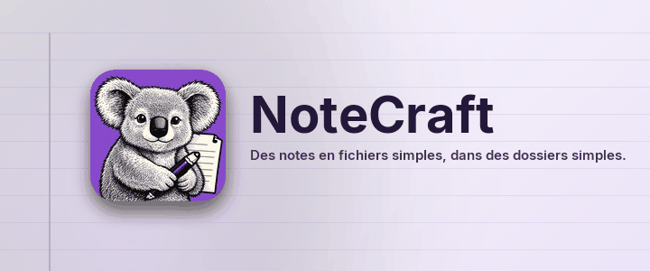

Des notes en fichiers simples, dans des dossiers simples.
NoteCraft garde les notes comme vous gardez vos fichiers : un carnet est un dossier, une section est un dossier, une page est un dossier avec un fichier et ses images dedans. Rien n'est enfermé dans une base de données, donc n'importe quel dossier que votre outil de synchronisation surveille déjà devient un carnet synchronisé, et une sauvegarde est une copie.
Chaque page de cette section montre une partie de NoteCraft, sur la page elle-même :
Cliquez n'importe où dans ce paragraphe et tapez. La page s'enregistre toute seule environ une seconde après que vous vous êtes arrêté. Appuyez sur Entrée en fin de ligne pour un nouveau paragraphe, et sur Échap pour en sortir.
Retour à la page de départ.
Cette page a été traduite par un modèle d'intelligence artificielle. Les corrections sont les bienvenues.